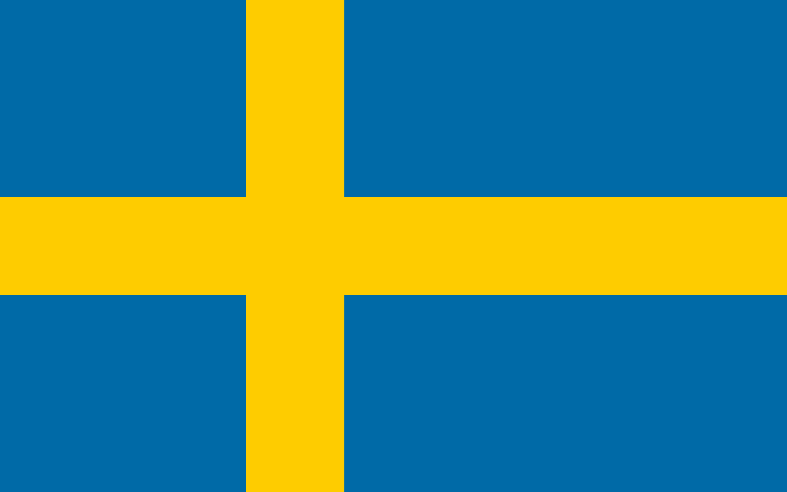

Radimský Michal
Radimský Michal
Place: Brno, Czechia
Rating: 2127.63, Std: 296.73, Rank: -
First game: 2004-07-03, Last game: 2005-10-02
Top rating: 2127.63 (2005-10-02)
Games: 31, Wins: 15, Draws: 4, Losses: 12
Gy1: 0, Gy2: 0, Gy5: 0
| Deskohraní 2005 | ||||
|---|---|---|---|---|
| Date | 2005-10-02 | Rating | 2127.63 | |
| Round | Color | Result | Opponent | |
| 1 | White | Loss | Klimeš Jan | 1981.24 |
| 2 | Black | Win | Kubů Jan | 1940.94 |
| 3 | Black | Win | Musilová Veronika | 1862.72 |
| 4 | Black | Win | Němec Tomáš | 2062.81 |
| 5 | Black | Win | Plecháč Luďek | 2112.62 |
| 6 | Black | Win | Neuman Petr | 2110.84 |
| 7 | White | Loss | Nykl Ondřej | 2408.25 |
| 8 | Black | Win | Rybka Aleš | 2211.56 |
| 9 | Black | Draw | Landa Pavel | 2164.58 |
| 4th Polish Gomoku Open | ||||
| Date | 2005-03-19 | Rating | 2108.19 | |
| Round | Color | Result | Opponent | |
| 1 | Black | Win |  Papiński Maciej Papiński Maciej | 1949.64 |
| 2 | White | Win | Małowiejski Piotr | 2118.87 |
| 3 | Black | Win | Piwowarski Daniel | 1901.27 |
| 4 | Black | Loss |  Ilu Timo Ilu Timo | 2450.79 |
| 5 | White | Draw | Rybka Aleš | 2205.31 |
| 6 | Black | Loss | Blusiewicz Jakub | 2083.62 |
| 7 | White | Loss |  Karlsson Stefan | 2374.65 |
| 8 | Black | Draw | Nowakowski Maciej | 2302.97 |
| 9 | White | Draw | Łękowski Jerzy | 2023.08 |
| 10 | White | Loss |  Németh Ákos Németh Ákos | 2187.16 |
| 11 | Black | Win | Kusák Martin | 2043.40 |
| 1st Polish Gomoku Open | ||||
| Date | 2004-07-03 | Rating | 2074.82 | |
| Round | Color | Result | Opponent | |
| 1 | White | Win | Lachocki Sebastian | 1980.76 |
| 2 | Black | Loss | Łękowski Jerzy | 2046.01 |
| 3 | White | Loss | Jopek Łukasz | 2029.14 |
| 4 | Black | Win | Kopa Marta | 1787.31 |
| 5 | White | Win | Kokoszka Arkadiusz | 1929.16 |
| 6 | Black | Loss | Soboń Karol | 2092.82 |
| 7 | White | Win | Pawłowski Krzysztof | 1878.24 |
| 8 | Black | Loss | Małowiejski Piotr | 2144.95 |
| 9 | White | Loss | Soliński Dariusz | 2122.26 |
| 10 | Black | Win | Idźkowska Ewa | 1761.12 |
| 11 | White | Loss | Jax Rafał | 2124.48 |